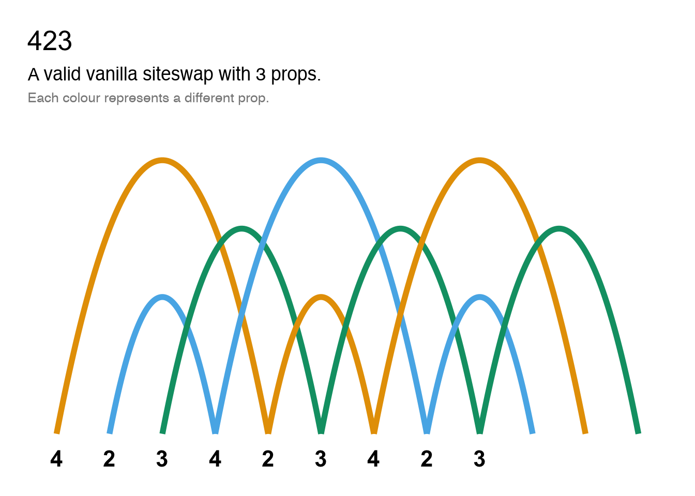
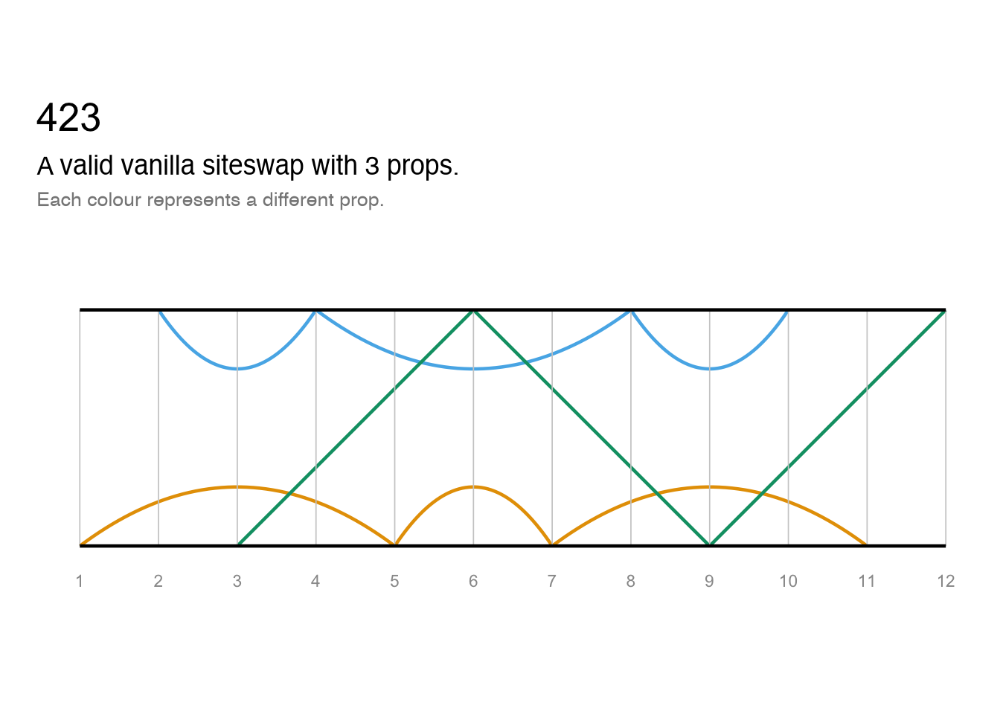
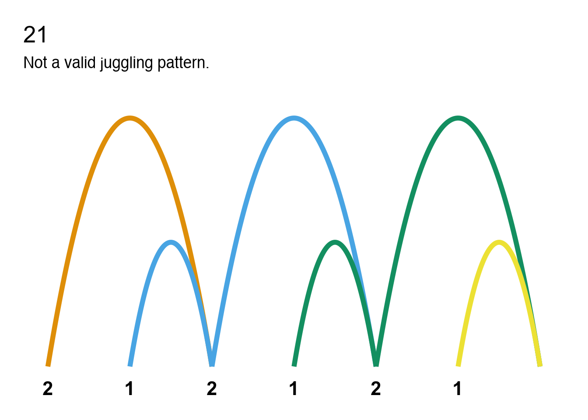
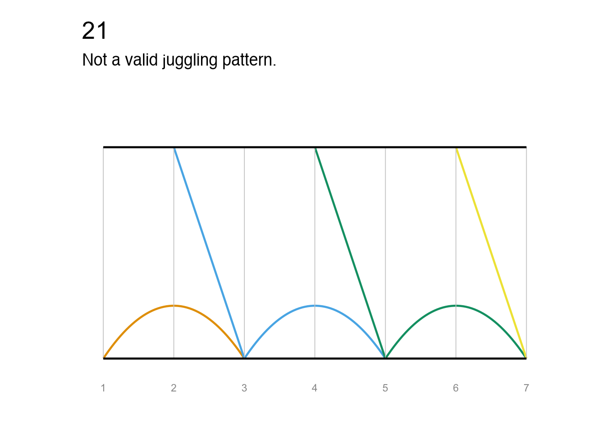

jugglr is an R package for validating and visualising juggling patterns expressed in siteswap notation. The siteswap() function is a factory that auto-detects the notation type and returns an S7 object of the appropriate subclass: vanillaSiteswap, synchronousSiteswap, multiplexSiteswap, synchronousMultiplexSiteswap, or passingSiteswap, all of which inherit from an abstract Siteswap parent class. Functions such as timeline(), ladder(), and throw_data() work across all these types via dedicated methods for each subclass.
Installation
You can install the development version of jugglr from GitHub with:
# install.packages("pak")
pak::pak("EllaKaye/jugglr")Siteswap
The siteswap() function auto-detects the notation type and returns the appropriate subclass. Each object’s print method reports whether the pattern is valid, how many props it requires, and its period and symmetry.
Synchronous
ss44 <- siteswap("(4,4)")
ss44
#> ✔ '(4,4)' is valid synchronous siteswap
#> ℹ It uses 4 props
#> ℹ It is symmetrical with period 2Alternation notation is also supported: siteswap("(4,2x)*") expands * into a full two-beat cycle.
Passing
ss_pass <- siteswap("<3p 3|3p 3>")
ss_pass
#> ✔ '<3p 3|3p 3>' is valid passing siteswap
#> ℹ It uses 6 props across 2 jugglers
#> ℹ It is asymmetrical with period 2Fractional notation (e.g. "<4.5 3 3 | 3 4 3.5>") is also supported for passing patterns. Multiplex ("[43]1") and synchronous multiplex ("(4,[42x])*") patterns are supported too.
Invalid patterns
Patterns that cannot be juggled are caught at construction time:
ss21 <- siteswap("21")
ss21
#> ✖ '21' is not a valid juggling pattern
#> ℹ The throws don't average to a whole number
#> ℹ Two or more throws land on the same beat (collision)Visualising the patterns
timeline() and ladder() work across all siteswap types, returning ggplot2 objects that can be further customised. throw_data() returns the underlying data frame for use in custom visualisations.
Plots
timeline(ss423)
ladder(ss423)
These plots are also useful for understanding why non-valid sequences are not jugglable. We can see, for example, where two props would need to be caught at the same time (which is not permissible in vanilla siteswap). Because each prop is shown in a different colour, we can see where balls are disappearing or needing suddenly to appear.
timeline(ss21)
ladder(ss21)
Animation
jugglr provides a wrapper to the JugglingLab GIF server. The animate() function accepts valid siteswap sequences as plain strings or as any Siteswap object. Note that the JugglingLab GIF server does not recognise fractional notation, so passingSiteswap objects using fractional notation cannot be animated.
If called in Positron or RStudio, animate() will show the animation in the Viewer pane, otherwise in the browser. If a path argument is supplied, the animation will be saved to that location instead. Note that it can take several seconds for the animation to render.
To save a GIF for embedding in an R Markdown or Quarto document, pass a path argument to animate(), then reference the saved file with knitr::include_graphics(). Display options can be set as chunk arguments: